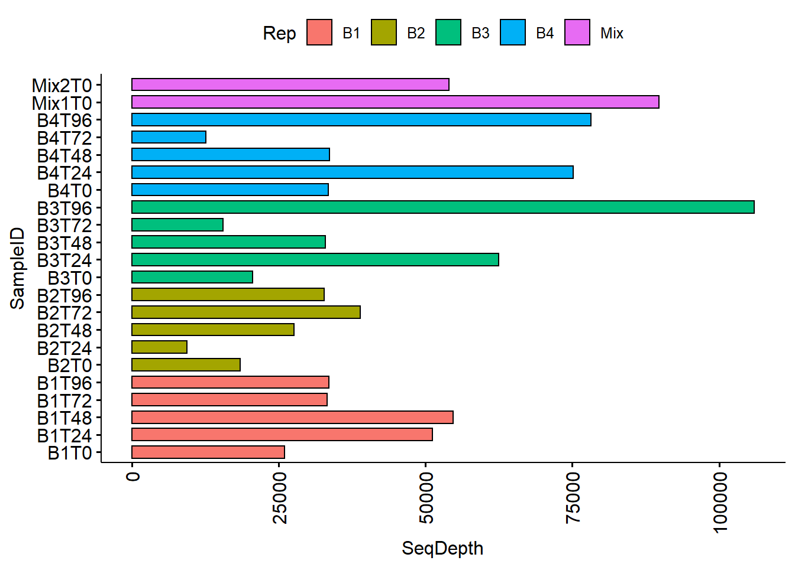
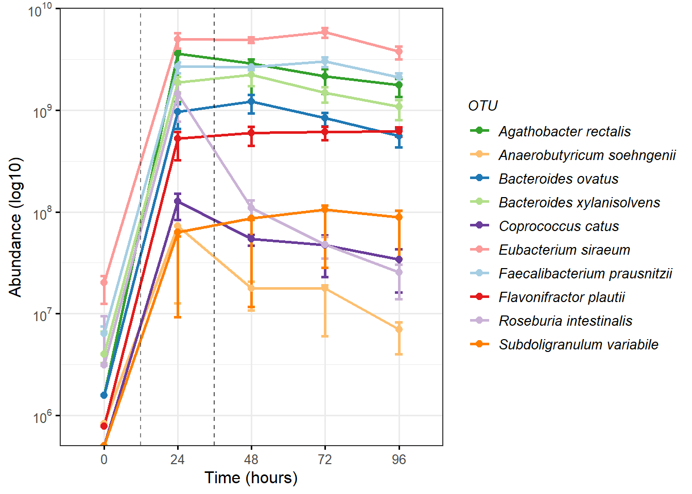

Last updated: 2021-04-04
Checks: 7 0
Knit directory: DbMM/
This reproducible R Markdown analysis was created with workflowr (version 1.6.2). The Checks tab describes the reproducibility checks that were applied when the results were created. The Past versions tab lists the development history.
Great! Since the R Markdown file has been committed to the Git repository, you know the exact version of the code that produced these results.
Great job! The global environment was empty. Objects defined in the global environment can affect the analysis in your R Markdown file in unknown ways. For reproduciblity it’s best to always run the code in an empty environment.
The command set.seed(20210404) was run prior to running the code in the R Markdown file. Setting a seed ensures that any results that rely on randomness, e.g. subsampling or permutations, are reproducible.
Great job! Recording the operating system, R version, and package versions is critical for reproducibility.
Nice! There were no cached chunks for this analysis, so you can be confident that you successfully produced the results during this run.
Great job! Using relative paths to the files within your workflowr project makes it easier to run your code on other machines.
Great! You are using Git for version control. Tracking code development and connecting the code version to the results is critical for reproducibility.
Note that you need to be careful to ensure that all relevant files for the analysis have been committed to Git prior to generating the results (you can use wflow_publish or wflow_git_commit). workflowr only checks the R Markdown file, but you know if there are other scripts or data files that it depends on. Below is the status of the Git repository when the results were generated:
Ignored files:
Ignored: .Rhistory
Ignored: .Rproj.user/
Untracked files:
Untracked: .Rprofile
Untracked: .gitattributes
Untracked: .gitignore
Untracked: DbMM.Rproj
Untracked: Ocucpancy_relationship.csv
Untracked: README.md
Untracked: _workflowr.yml
Untracked: analysis/
Untracked: bin/
Untracked: code/
Untracked: data/
Untracked: data_raw/
Untracked: output/
Untracked: structure.Rmd
Note that any generated files, e.g. HTML, png, CSS, etc., are not included in this status report because it is ok for generated content to have uncommitted changes.
There are no past versions. Publish this analysis with wflow_publish() to start tracking its development.
The 16S rRNA gene profiles are converted to absolute counts using total qPCR and copy number information of each bacterial strain from thier genome.
#library("devtools");
#devtools::install_github("timelyportfolio/sankeytree")
library(DT)
library(ggplot2)
library(dplyr)
library(microbiome)
library(microbiomeutilities)
library(ggrepel)
library(ggpubr)
library(RColorBrewer)
library(scales)Read in the phyloseq object created in DADA2 analysis and stored in output/rds/pseq01.rds.
ps <- readRDS("data/03_amplicon/rds/pseq01.rds")
#ps <- pseq01
#summarize_phyloseq(ps)
# remove the mock community samples
fil.ps <- subset_samples(ps, CarbonSource != "Mck")
fil.ps <- prune_taxa(taxa_sums(fil.ps) > 0, fil.ps)
ps <- fil.ps
print(ps)phyloseq-class experiment-level object
otu_table() OTU Table: [ 232 taxa and 22 samples ]
sample_data() Sample Data: [ 22 samples by 23 sample variables ]
tax_table() Taxonomy Table: [ 232 taxa by 6 taxonomic ranks ]table(meta(fil.ps)$Timepoint)
T0 T24 T48 T72 T96 X
4 4 4 4 4 2 write_phyloseq(ps, "OTU", "data/03_amplicon/tables/" )Warning: 'write_phyloseq' is deprecated.
Use '' instead.
See help("Deprecated") and help("The microbiome::write_phyloseq will be
deprecated in a future release.-deprecated").Writing OTU in the file data/03_amplicon/tables//otu_table.csv[1] "data/03_amplicon/tables/"#abundances(ps)There are 41 ASVs in 22 samples. T0=4, T24=4, T48=4, T72=4, T96=4, X=2
X is the innoculum serves as a technical a control for which DNA was extracted and PCR sequenced. This will give an idea of sequencing run replicability.
table(tax_table(ps)[, "Genus"], exclude = NA)
Agathobacter_rectalis Anaerobutyricum_soehngenii
19 16
Bacteroides_ovatus Bacteroides_xylanisolvens
17 22
Coprococcus_catus Eubacterium_siraeum
12 37
Faecalibacterium_prausnitzii Lachnospiraceae_bacterium 7_1_58FAA
44 31
Roseburia_intestinalis Subdoligranulum_variabile
14 4 #tax_table(ps)#Aggregate to speceis level
# Format the taxonomic table to make it compatiable with aggregate_taxa function of microbiome R package.
#head(abundances(ps))
taxic <- as.data.frame(ps@tax_table)
taxic$OTU <- rownames(taxic) # Add the OTU ids from OTU table into the taxa table at the end.
colnames(taxic) <- c("Phylum",
"Class",
"Order",
"Family",
"Genus",
"Species",
"OTU")
colnames(taxic)[1] "Phylum" "Class" "Order" "Family" "Genus" "Species" "OTU" taxmat <- as.matrix(taxic) # convert it into a matrix.
new.tax <- tax_table(taxmat) # convert into phyloseq compatible file.
tax_table(ps) <- new.tax # incroporate into phyloseq Object
ps1.a <- ps
ps1.a@phy_tree <- NULL
ps1 <- tax_glom(ps1.a,
"Species")
head(tax_table(ps1)[1:5])Taxonomy Table: [5 taxa by 7 taxonomic ranks]:
Phylum
GTCACTCCTGCTCCGAAGAGAAGGTACGGTTAAGTACCGGTCAGAAGGATGTCAAGACTTGGTAAGGTTCTTCGCGTTGCTTCGAATTAANNNNNNNNNNCCCAGGTGGAATACTTACTGCGTTTGCGACGGCACCGAGAAGCAATGCTTCCCAACACCTAGTATTCATCGTTTACGGCGTGGACTACCA "Firmicutes"
GTCTCTGCGTCCCGAAGGAAAATACTGTTTCCAGCATCGTCGCAGGATGTCAAGACTTGGTAAGGTTCTTCGCGTTGCGTCGAATTAAACNNNNNNNNNNCCCAGGTGGATTACTTATTGTGTTAACTGCGGCACTGAAGGGGTCAATCCTCCAACACCTAGTAATCATCGTTTACGGTGTGGACTACCA "Firmicutes"
TGGTAGTCCACACCGTAAACGATGATTACTAGGTGTTGGAGGATTGACCCCTTCAGTGCCGCAGTTAACACAATAAGTAATCCACCTGGGNNNNNNNNNNGTTTAATTCGACGCAACGCGAAGAACCTTACCAAGTCTTGACATCCTGCGACGATGCTGGAAACAGTATTTTCCTTCGGGACGCAGAGAC "Firmicutes"
TCACATTTGCCTTGCGGCTAACCTGTTTCCAGATTATTCAAATGCAATTTAAGCCCGGGTAAGGTTCCTCGCGTATCATCGAATTAAACCNNNNNNNNNNCTCCCCAGGTGGAATACTTAATGCTTTCGCTTGGCCGCTTACTGTATATCGCAAACAGCGAGTATTCATCGTTTACTGTGTGGACTACCA "Bacteroidetes"
TGGTAGTCCACACAGTAAACGATGAATACTCGCTGTTTGCGATATACAGTAAGCGGCCAAGCGAAAGCATTAAGTATTCCACCTGGGGAGNNNNNNNNNNGGTTTAATTCGATGATACGCGAGGAACCTTACCCGGGCTTAAATTGCATTTGAATAATCTGGAAACAGGTTAGCCGCAAGGCAAATGTGA "Bacteroidetes"
Class
GTCACTCCTGCTCCGAAGAGAAGGTACGGTTAAGTACCGGTCAGAAGGATGTCAAGACTTGGTAAGGTTCTTCGCGTTGCTTCGAATTAANNNNNNNNNNCCCAGGTGGAATACTTACTGCGTTTGCGACGGCACCGAGAAGCAATGCTTCCCAACACCTAGTATTCATCGTTTACGGCGTGGACTACCA "Clostridia"
GTCTCTGCGTCCCGAAGGAAAATACTGTTTCCAGCATCGTCGCAGGATGTCAAGACTTGGTAAGGTTCTTCGCGTTGCGTCGAATTAAACNNNNNNNNNNCCCAGGTGGATTACTTATTGTGTTAACTGCGGCACTGAAGGGGTCAATCCTCCAACACCTAGTAATCATCGTTTACGGTGTGGACTACCA "Clostridia"
TGGTAGTCCACACCGTAAACGATGATTACTAGGTGTTGGAGGATTGACCCCTTCAGTGCCGCAGTTAACACAATAAGTAATCCACCTGGGNNNNNNNNNNGTTTAATTCGACGCAACGCGAAGAACCTTACCAAGTCTTGACATCCTGCGACGATGCTGGAAACAGTATTTTCCTTCGGGACGCAGAGAC "Clostridia"
TCACATTTGCCTTGCGGCTAACCTGTTTCCAGATTATTCAAATGCAATTTAAGCCCGGGTAAGGTTCCTCGCGTATCATCGAATTAAACCNNNNNNNNNNCTCCCCAGGTGGAATACTTAATGCTTTCGCTTGGCCGCTTACTGTATATCGCAAACAGCGAGTATTCATCGTTTACTGTGTGGACTACCA "Bacteroidia"
TGGTAGTCCACACAGTAAACGATGAATACTCGCTGTTTGCGATATACAGTAAGCGGCCAAGCGAAAGCATTAAGTATTCCACCTGGGGAGNNNNNNNNNNGGTTTAATTCGATGATACGCGAGGAACCTTACCCGGGCTTAAATTGCATTTGAATAATCTGGAAACAGGTTAGCCGCAAGGCAAATGTGA "Bacteroidia"
Order
GTCACTCCTGCTCCGAAGAGAAGGTACGGTTAAGTACCGGTCAGAAGGATGTCAAGACTTGGTAAGGTTCTTCGCGTTGCTTCGAATTAANNNNNNNNNNCCCAGGTGGAATACTTACTGCGTTTGCGACGGCACCGAGAAGCAATGCTTCCCAACACCTAGTATTCATCGTTTACGGCGTGGACTACCA "Clostridiales"
GTCTCTGCGTCCCGAAGGAAAATACTGTTTCCAGCATCGTCGCAGGATGTCAAGACTTGGTAAGGTTCTTCGCGTTGCGTCGAATTAAACNNNNNNNNNNCCCAGGTGGATTACTTATTGTGTTAACTGCGGCACTGAAGGGGTCAATCCTCCAACACCTAGTAATCATCGTTTACGGTGTGGACTACCA "Clostridiales"
TGGTAGTCCACACCGTAAACGATGATTACTAGGTGTTGGAGGATTGACCCCTTCAGTGCCGCAGTTAACACAATAAGTAATCCACCTGGGNNNNNNNNNNGTTTAATTCGACGCAACGCGAAGAACCTTACCAAGTCTTGACATCCTGCGACGATGCTGGAAACAGTATTTTCCTTCGGGACGCAGAGAC "Clostridiales"
TCACATTTGCCTTGCGGCTAACCTGTTTCCAGATTATTCAAATGCAATTTAAGCCCGGGTAAGGTTCCTCGCGTATCATCGAATTAAACCNNNNNNNNNNCTCCCCAGGTGGAATACTTAATGCTTTCGCTTGGCCGCTTACTGTATATCGCAAACAGCGAGTATTCATCGTTTACTGTGTGGACTACCA "Bacteroidales"
TGGTAGTCCACACAGTAAACGATGAATACTCGCTGTTTGCGATATACAGTAAGCGGCCAAGCGAAAGCATTAAGTATTCCACCTGGGGAGNNNNNNNNNNGGTTTAATTCGATGATACGCGAGGAACCTTACCCGGGCTTAAATTGCATTTGAATAATCTGGAAACAGGTTAGCCGCAAGGCAAATGTGA "Bacteroidales"
Family
GTCACTCCTGCTCCGAAGAGAAGGTACGGTTAAGTACCGGTCAGAAGGATGTCAAGACTTGGTAAGGTTCTTCGCGTTGCTTCGAATTAANNNNNNNNNNCCCAGGTGGAATACTTACTGCGTTTGCGACGGCACCGAGAAGCAATGCTTCCCAACACCTAGTATTCATCGTTTACGGCGTGGACTACCA "Eubacteriaceae"
GTCTCTGCGTCCCGAAGGAAAATACTGTTTCCAGCATCGTCGCAGGATGTCAAGACTTGGTAAGGTTCTTCGCGTTGCGTCGAATTAAACNNNNNNNNNNCCCAGGTGGATTACTTATTGTGTTAACTGCGGCACTGAAGGGGTCAATCCTCCAACACCTAGTAATCATCGTTTACGGTGTGGACTACCA "Ruminococcaceae"
TGGTAGTCCACACCGTAAACGATGATTACTAGGTGTTGGAGGATTGACCCCTTCAGTGCCGCAGTTAACACAATAAGTAATCCACCTGGGNNNNNNNNNNGTTTAATTCGACGCAACGCGAAGAACCTTACCAAGTCTTGACATCCTGCGACGATGCTGGAAACAGTATTTTCCTTCGGGACGCAGAGAC "Eubacteriaceae"
TCACATTTGCCTTGCGGCTAACCTGTTTCCAGATTATTCAAATGCAATTTAAGCCCGGGTAAGGTTCCTCGCGTATCATCGAATTAAACCNNNNNNNNNNCTCCCCAGGTGGAATACTTAATGCTTTCGCTTGGCCGCTTACTGTATATCGCAAACAGCGAGTATTCATCGTTTACTGTGTGGACTACCA "Bacteroidaceae"
TGGTAGTCCACACAGTAAACGATGAATACTCGCTGTTTGCGATATACAGTAAGCGGCCAAGCGAAAGCATTAAGTATTCCACCTGGGGAGNNNNNNNNNNGGTTTAATTCGATGATACGCGAGGAACCTTACCCGGGCTTAAATTGCATTTGAATAATCTGGAAACAGGTTAGCCGCAAGGCAAATGTGA "Bacteroidaceae"
Genus
GTCACTCCTGCTCCGAAGAGAAGGTACGGTTAAGTACCGGTCAGAAGGATGTCAAGACTTGGTAAGGTTCTTCGCGTTGCTTCGAATTAANNNNNNNNNNCCCAGGTGGAATACTTACTGCGTTTGCGACGGCACCGAGAAGCAATGCTTCCCAACACCTAGTATTCATCGTTTACGGCGTGGACTACCA "Agathobacter"
GTCTCTGCGTCCCGAAGGAAAATACTGTTTCCAGCATCGTCGCAGGATGTCAAGACTTGGTAAGGTTCTTCGCGTTGCGTCGAATTAAACNNNNNNNNNNCCCAGGTGGATTACTTATTGTGTTAACTGCGGCACTGAAGGGGTCAATCCTCCAACACCTAGTAATCATCGTTTACGGTGTGGACTACCA "Faecalibacterium"
TGGTAGTCCACACCGTAAACGATGATTACTAGGTGTTGGAGGATTGACCCCTTCAGTGCCGCAGTTAACACAATAAGTAATCCACCTGGGNNNNNNNNNNGTTTAATTCGACGCAACGCGAAGAACCTTACCAAGTCTTGACATCCTGCGACGATGCTGGAAACAGTATTTTCCTTCGGGACGCAGAGAC "Eubacterium"
TCACATTTGCCTTGCGGCTAACCTGTTTCCAGATTATTCAAATGCAATTTAAGCCCGGGTAAGGTTCCTCGCGTATCATCGAATTAAACCNNNNNNNNNNCTCCCCAGGTGGAATACTTAATGCTTTCGCTTGGCCGCTTACTGTATATCGCAAACAGCGAGTATTCATCGTTTACTGTGTGGACTACCA "Bacteroides"
TGGTAGTCCACACAGTAAACGATGAATACTCGCTGTTTGCGATATACAGTAAGCGGCCAAGCGAAAGCATTAAGTATTCCACCTGGGGAGNNNNNNNNNNGGTTTAATTCGATGATACGCGAGGAACCTTACCCGGGCTTAAATTGCATTTGAATAATCTGGAAACAGGTTAGCCGCAAGGCAAATGTGA "Bacteroides"
Species
GTCACTCCTGCTCCGAAGAGAAGGTACGGTTAAGTACCGGTCAGAAGGATGTCAAGACTTGGTAAGGTTCTTCGCGTTGCTTCGAATTAANNNNNNNNNNCCCAGGTGGAATACTTACTGCGTTTGCGACGGCACCGAGAAGCAATGCTTCCCAACACCTAGTATTCATCGTTTACGGCGTGGACTACCA "Agathobacter_rectalis"
GTCTCTGCGTCCCGAAGGAAAATACTGTTTCCAGCATCGTCGCAGGATGTCAAGACTTGGTAAGGTTCTTCGCGTTGCGTCGAATTAAACNNNNNNNNNNCCCAGGTGGATTACTTATTGTGTTAACTGCGGCACTGAAGGGGTCAATCCTCCAACACCTAGTAATCATCGTTTACGGTGTGGACTACCA "Faecalibacterium_prausnitzii"
TGGTAGTCCACACCGTAAACGATGATTACTAGGTGTTGGAGGATTGACCCCTTCAGTGCCGCAGTTAACACAATAAGTAATCCACCTGGGNNNNNNNNNNGTTTAATTCGACGCAACGCGAAGAACCTTACCAAGTCTTGACATCCTGCGACGATGCTGGAAACAGTATTTTCCTTCGGGACGCAGAGAC "Eubacterium_siraeum"
TCACATTTGCCTTGCGGCTAACCTGTTTCCAGATTATTCAAATGCAATTTAAGCCCGGGTAAGGTTCCTCGCGTATCATCGAATTAAACCNNNNNNNNNNCTCCCCAGGTGGAATACTTAATGCTTTCGCTTGGCCGCTTACTGTATATCGCAAACAGCGAGTATTCATCGTTTACTGTGTGGACTACCA "Bacteroides_xylanisolvens"
TGGTAGTCCACACAGTAAACGATGAATACTCGCTGTTTGCGATATACAGTAAGCGGCCAAGCGAAAGCATTAAGTATTCCACCTGGGGAGNNNNNNNNNNGGTTTAATTCGATGATACGCGAGGAACCTTACCCGGGCTTAAATTGCATTTGAATAATCTGGAAACAGGTTAGCCGCAAGGCAAATGTGA "Bacteroides_ovatus"
OTU
GTCACTCCTGCTCCGAAGAGAAGGTACGGTTAAGTACCGGTCAGAAGGATGTCAAGACTTGGTAAGGTTCTTCGCGTTGCTTCGAATTAANNNNNNNNNNCCCAGGTGGAATACTTACTGCGTTTGCGACGGCACCGAGAAGCAATGCTTCCCAACACCTAGTATTCATCGTTTACGGCGTGGACTACCA NA
GTCTCTGCGTCCCGAAGGAAAATACTGTTTCCAGCATCGTCGCAGGATGTCAAGACTTGGTAAGGTTCTTCGCGTTGCGTCGAATTAAACNNNNNNNNNNCCCAGGTGGATTACTTATTGTGTTAACTGCGGCACTGAAGGGGTCAATCCTCCAACACCTAGTAATCATCGTTTACGGTGTGGACTACCA NA
TGGTAGTCCACACCGTAAACGATGATTACTAGGTGTTGGAGGATTGACCCCTTCAGTGCCGCAGTTAACACAATAAGTAATCCACCTGGGNNNNNNNNNNGTTTAATTCGACGCAACGCGAAGAACCTTACCAAGTCTTGACATCCTGCGACGATGCTGGAAACAGTATTTTCCTTCGGGACGCAGAGAC NA
TCACATTTGCCTTGCGGCTAACCTGTTTCCAGATTATTCAAATGCAATTTAAGCCCGGGTAAGGTTCCTCGCGTATCATCGAATTAAACCNNNNNNNNNNCTCCCCAGGTGGAATACTTAATGCTTTCGCTTGGCCGCTTACTGTATATCGCAAACAGCGAGTATTCATCGTTTACTGTGTGGACTACCA NA
TGGTAGTCCACACAGTAAACGATGAATACTCGCTGTTTGCGATATACAGTAAGCGGCCAAGCGAAAGCATTAAGTATTCCACCTGGGGAGNNNNNNNNNNGGTTTAATTCGATGATACGCGAGGAACCTTACCCGGGCTTAAATTGCATTTGAATAATCTGGAAACAGGTTAGCCGCAAGGCAAATGTGA NA write_phyloseq(ps1,
"OTU",
"data/03_amplicon/tables/")Warning: 'write_phyloseq' is deprecated.
Use '' instead.
See help("Deprecated") and help("The microbiome::write_phyloseq will be
deprecated in a future release.-deprecated").Writing OTU in the file data/03_amplicon/tables//otu_table.csv[1] "data/03_amplicon/tables/"table(tax_table(ps1)[, "Species"],
exclude = NULL)
Agathobacter_rectalis Anaerobutyricum_soehngenii
1 1
Bacteroides_ovatus Bacteroides_xylanisolvens
1 1
Coprococcus_catus Eubacterium_siraeum
1 1
Faecalibacterium_prausnitzii Lachnospiraceae_bacterium 7_1_58FAA
1 1
Roseburia_intestinalis Subdoligranulum_variabile
1 1 taxa_sums(ps1)GTCACTCCTGCTCCGAAGAGAAGGTACGGTTAAGTACCGGTCAGAAGGATGTCAAGACTTGGTAAGGTTCTTCGCGTTGCTTCGAATTAANNNNNNNNNNCCCAGGTGGAATACTTACTGCGTTTGCGACGGCACCGAGAAGCAATGCTTCCCAACACCTAGTATTCATCGTTTACGGCGTGGACTACCA
345625
GTCTCTGCGTCCCGAAGGAAAATACTGTTTCCAGCATCGTCGCAGGATGTCAAGACTTGGTAAGGTTCTTCGCGTTGCGTCGAATTAAACNNNNNNNNNNCCCAGGTGGATTACTTATTGTGTTAACTGCGGCACTGAAGGGGTCAATCCTCCAACACCTAGTAATCATCGTTTACGGTGTGGACTACCA
197139
TGGTAGTCCACACCGTAAACGATGATTACTAGGTGTTGGAGGATTGACCCCTTCAGTGCCGCAGTTAACACAATAAGTAATCCACCTGGGNNNNNNNNNNGTTTAATTCGACGCAACGCGAAGAACCTTACCAAGTCTTGACATCCTGCGACGATGCTGGAAACAGTATTTTCCTTCGGGACGCAGAGAC
187603
TCACATTTGCCTTGCGGCTAACCTGTTTCCAGATTATTCAAATGCAATTTAAGCCCGGGTAAGGTTCCTCGCGTATCATCGAATTAAACCNNNNNNNNNNCTCCCCAGGTGGAATACTTAATGCTTTCGCTTGGCCGCTTACTGTATATCGCAAACAGCGAGTATTCATCGTTTACTGTGTGGACTACCA
49261
TGGTAGTCCACACAGTAAACGATGAATACTCGCTGTTTGCGATATACAGTAAGCGGCCAAGCGAAAGCATTAAGTATTCCACCTGGGGAGNNNNNNNNNNGGTTTAATTCGATGATACGCGAGGAACCTTACCCGGGCTTAAATTGCATTTGAATAATCTGGAAACAGGTTAGCCGCAAGGCAAATGTGA
50490
GTCACCGATGCTCCGAAGAGAAAACACATTACATGTTCTGTCATCGGGATGTCAAGACTTGGTAAGGTTCTTCGCGTTGCTTCGAATTAANNNNNNNNNNCCCAGGTGGAATACTTATTGCGTTTGCTGCGGCACCGAAGAGCAATGCTCCCCGACACCTAGTATTCATCGTTTACGGCGTGGACTACCA
50643
TGGTAGTCCACGCCGTAAACGATGGATACTAGGTGTGGGGGGTCTGACCCCCTCCGTGCCGCAGTTAACACAATAAGTATCCCACCTGGGNNNNNNNNNNATTCGAAGCAACGCGAAGAACCTTACCAGGGCTTGACATCCCACTAACGAAGCAGAGATGCATTAGGTGCCCTTCGGGGAAAGTGGAGAC
20532
TGGTAGTCCATGCCGTAAACGATGATTACTAGGTGTTGGAGGATTGACCCCTTCAGTGCCGCAGTTAACACAATAAGTAATCCACCTGGGNNNNNNNNNNTTTAATTCGAAGCAACGCGAAGAACCTTACCAGGTCTTGACATCCGATGCATAGTGCAGAGATGCATGAAGTCCTTCGGGACATCGAGAC
12064
GTCTCTTCTGTCCCGAAGGAAGACTCCCATTACGGAGTGGTCAGAAGGATGTCAAGACCTGGTAAGGTTCTTCGCGTTGCTTCGAATTAANNNNNNNNNNCCCAGGTGGAATACTTACTGCGTTTGCGACGGCACCGAAGCCTATACGGCCCCGACACCTAGTATTCATCGTTTACGGCGTGGACTACCA
22362
TGGTAGTCCACGCCGTAAACGATGAATACTAGGTGTCGGGGCTCATAAGAGCTTCGGTGCCGCAGCAAACGCAATAAGTATTCCACCTGGNNNNNNNNNNTTAATTCGAAGCAACGCGAAGAACCTTACCAGGCCTTGACATCCCGGTGACCGACCCGTAATGGGGTCTTCTCTACGGAGCACTGGAGAC
3896 #abundances(ps1)
taxa_names(ps1) <- tax_table(ps1)[,"Species"]Check for sequecing depth
SeqDepth = colSums(otu_table(ps1))
sample_data(ps1)$SeqDepth = SeqDepth
sample_data(ps1)$SampleID = rownames(sample_data(ps1))
ggbarplot(meta(ps1),
"SampleID",
"SeqDepth",
fill = "Rep") + rotate_x_text() + coord_flip()
ggsave("data/03_amplicon/figs/02_raw_Seq_depth.pdf",
height = 6,
width = 8)The copy numbers were obtained from IMG M/ER and Genome sequences.
copy_num <- read.csv("data_raw/03_amplicon/rrna_MMDb/dbmm_copynumbers.csv",
header = T,
row.names = 1,
stringsAsFactors = F)
DT::datatable(copy_num)The copy numbers for individial strains was estimated using barrnap.
# Exrtact strain counts from phyloseq object
counts <- as.data.frame(abundances(ps1))
copy_num_file <- copy_num
column_with_ids = "Genus_species"
# @parm counts otu tbale with rows are taxa
# @parm copy_num_file file with information on copynumbers
# @parm column_with_ids is the coulm in copy number file that contain names matching the rownames in OTU table
intersect(rownames(counts), copy_num_file[,column_with_ids]) [1] "Agathobacter_rectalis" "Faecalibacterium_prausnitzii"
[3] "Eubacterium_siraeum" "Bacteroides_xylanisolvens"
[5] "Bacteroides_ovatus" "Roseburia_intestinalis"
[7] "Lachnospiraceae_bacterium 7_1_58FAA" "Subdoligranulum_variabile"
[9] "Anaerobutyricum_soehngenii" "Coprococcus_catus" taxa_names <- rownames(counts)
copy_num_file <- copy_num_file[ order(match(copy_num_file$Genus_species, rownames(counts))), ]
# The copy_number file needs to have a column matching the rownames of the otu_table.
if (rownames(counts) != copy_num_file[, column_with_ids]) {
print(
"The copy_number file needs to have a column with matching values to the rownames of the otu_table."
)
}Warning in if (rownames(counts) != copy_num_file[, column_with_ids]) {: the
condition has length > 1 and only the first element will be usedrownames(copy_num_file) <- copy_num_file[, column_with_ids]
copy_num_file <- copy_num_file[taxa_names, ]
corrected_tab <- ceiling((counts) / copy_num_file[, "copy_number"])
# check
head(corrected_tab) B1T0 B1T24 B1T48 B1T72 B1T96 B2T0 B2T24 B2T48
Agathobacter_rectalis 904 1982 2875 1920 2320 607 339 1452
Faecalibacterium_prausnitzii 3479 5859 6535 4399 4220 2582 1183 3759
Eubacterium_siraeum 6661 11841 13847 8790 8463 4948 2238 7580
Bacteroides_xylanisolvens 1125 2482 5046 2367 1682 605 559 1858
Bacteroides_ovatus 599 1238 2475 1169 820 325 267 934
Roseburia_intestinalis 573 3872 616 127 77 388 569 168
B2T72 B2T96 B3T0 B3T24 B3T48 B3T72 B3T96 B4T0
Agathobacter_rectalis 2498 2033 599 5418 2650 1345 10838 1253
Faecalibacterium_prausnitzii 4930 4156 2923 5688 2959 1401 8450 4092
Eubacterium_siraeum 10657 7439 5706 10962 5108 2489 12889 7594
Bacteroides_xylanisolvens 2056 2672 750 4836 3401 1249 7297 1536
Bacteroides_ovatus 1122 1292 326 2391 1730 663 3830 797
Roseburia_intestinalis 97 71 469 619 53 24 90 1947
B4T24 B4T48 B4T72 B4T96 Mix1T0 Mix2T0
Agathobacter_rectalis 10386 4340 1181 8122 3764 2309
Faecalibacterium_prausnitzii 1922 1831 1331 7552 12366 6958
Eubacterium_siraeum 3047 3172 2540 13416 23561 14655
Bacteroides_xylanisolvens 2395 1766 362 1882 2190 1145
Bacteroides_ovatus 1343 993 220 1014 1077 626
Roseburia_intestinalis 2316 32 7 42 2794 1940# check
head(otu_table(ps1))OTU Table: [6 taxa and 22 samples]
taxa are rows
B1T0 B1T24 B1T48 B1T72 B1T96 B2T0 B2T24 B2T48
Agathobacter_rectalis 4518 9908 14371 9596 11597 3035 1692 7257
Faecalibacterium_prausnitzii 6958 11718 13070 8797 8440 5163 2366 7517
Eubacterium_siraeum 6661 11841 13847 8790 8463 4948 2238 7580
Bacteroides_xylanisolvens 1125 2482 5046 2367 1682 605 559 1858
Bacteroides_ovatus 1197 2476 4949 2338 1640 650 534 1867
Roseburia_intestinalis 1718 11614 1848 379 229 1163 1706 502
B2T72 B2T96 B3T0 B3T24 B3T48 B3T72 B3T96 B4T0
Agathobacter_rectalis 12487 10164 2993 27088 13246 6721 54189 6265
Faecalibacterium_prausnitzii 9860 8311 5846 11375 5918 2801 16900 8183
Eubacterium_siraeum 10657 7439 5706 10962 5108 2489 12889 7594
Bacteroides_xylanisolvens 2056 2672 750 4836 3401 1249 7297 1536
Bacteroides_ovatus 2244 2584 651 4781 3459 1325 7659 1593
Roseburia_intestinalis 289 211 1405 1857 159 70 270 5840
B4T24 B4T48 B4T72 B4T96 Mix1T0 Mix2T0
Agathobacter_rectalis 51928 21699 5905 40606 18818 11542
Faecalibacterium_prausnitzii 3843 3662 2661 15104 24731 13915
Eubacterium_siraeum 3047 3172 2540 13416 23561 14655
Bacteroides_xylanisolvens 2395 1766 362 1882 2190 1145
Bacteroides_ovatus 2686 1985 440 2027 2154 1251
Roseburia_intestinalis 6946 94 19 124 8382 5818# add copy number corrected
otu_table(ps1) <- otu_table(as.matrix(corrected_tab), taxa_are_rows = T)
saveRDS(ps1, "data/03_amplicon/rds/02_CP_corrected_ps1.rds")
write_phyloseq(ps1, "OTU", path = "data/03_amplicon/tables/")Warning: 'write_phyloseq' is deprecated.
Use '' instead.
See help("Deprecated") and help("The microbiome::write_phyloseq will be
deprecated in a future release.-deprecated").Writing OTU in the file data/03_amplicon/tables//otu_table.csv[1] "data/03_amplicon/tables/"#ps1<- subset_samples(ps1, CarbonSource!="Mck")
#abundances(ps1.mock)Now read the copy number correct phyloseq object.
ps1 <- readRDS("data/03_amplicon/rds/02_CP_corrected_ps1.rds")
#sample_data(ps1)
df.met <- meta(ps1)
#otu_table(ps1)We did qPCR for total 16S rRNA copies in each of the samples. This will be used to correct of sequecing depth and obtain quantitative microbiota profiles.
# read in the function Doris Vandeputte obtained from github
source("code/qmp_edit.r")
# read the qPCR counts table
counts_tables <- read.csv("data_raw/03_amplicon/copies_rrna_counts_qpcr.csv",
row.names = 1)
otu_qmp <- t(abundances(ps1)) # extract abundance table form copy number corrected pseq object
# Now rarefy to even sampling depth
otu_w_qmp <- rarefy_even_sampling_depth(otu_qmp,
counts_tables)
#write.csv(t(ps1.qmp), "post_dada2/qmp_dbmm.csv")
all(row.names(otu_w_qmp) == row.names(counts_tables))[1] TRUEps1.qmp <- ps1
otu_qmp_A <- otu_table(t(otu_w_qmp), taxa_are_rows = T)
otu_table(ps1.qmp) <- otu_qmp_A
saveRDS(ps1.qmp, "data/03_amplicon/rds/02_ps1.qmp.rds")ps1.qmp <- readRDS("data/03_amplicon/rds/02_ps1.qmp.rds")
ps1.qmpphyloseq-class experiment-level object
otu_table() OTU Table: [ 10 taxa and 22 samples ]
sample_data() Sample Data: [ 22 samples by 25 sample variables ]
tax_table() Taxonomy Table: [ 10 taxa by 7 taxonomic ranks ]med <- meta(ps1.qmp)
unique(med$SampleID) [1] "B1T0" "B1T24" "B1T48" "B1T72" "B1T96" "B2T0" "B2T24" "B2T48"
[9] "B2T72" "B2T96" "B3T0" "B3T24" "B3T48" "B3T72" "B3T96" "B4T0"
[17] "B4T24" "B4T48" "B4T72" "B4T96" "Mix1T0" "Mix2T0"taxa_names(ps1.qmp) <- gsub("_", " ", taxa_names(ps1.qmp))
taxa_names(ps1.qmp) [1] "Agathobacter rectalis" "Faecalibacterium prausnitzii"
[3] "Eubacterium siraeum" "Bacteroides xylanisolvens"
[5] "Bacteroides ovatus" "Roseburia intestinalis"
[7] "Lachnospiraceae bacterium 7 1 58FAA" "Subdoligranulum variabile"
[9] "Anaerobutyricum soehngenii" "Coprococcus catus" taxa_names(ps1.qmp) <- gsub("Lachnospiraceae bacterium 7 1 58FAA", "Flavonifractor plautii", taxa_names(ps1.qmp)) # Define a color for each strain used in the Db-MM
strain.colors <- c(`Bacteroides ovatus` = "#1F78B4",
`Bacteroides xylanisolvens` = "#B2DF8A",
`Anaerobutyricum soehngenii` = "#FDBF6F",
`Agathobacter rectalis`= "#33A02C",
`Eubacterium siraeum` ="#FB9A99",
`Faecalibacterium prausnitzii` = "#A6CEE3",
`Flavonifractor plautii` = "#E31A1C",
`Roseburia intestinalis` = "#CAB2D6",
`Subdoligranulum variabile` = "#FF7F00",
`Coprococcus catus` = "#6A3D9A")#ps1.qmp.sub <- subset_samples(ps1.qmp, sample_names(ps1.qmp)!=fil)
#qmp_df <- phy_to_ldf(ps1.qmp.sub, transform.counts = NULL)
qmp_df <- psmelt(ps1.qmp)Warning in psmelt(ps1.qmp): The rank names:
OTU
have been renamed to:
taxa_OTU
to avoid conflicts with special phyloseq plot attribute names.# remove the innoculum
ps.df.qmp <- subset(qmp_df, Timepoint != "X")
#ps.df.qmp$Species <- gsub("_", " ", ps.df.qmp$Species)
ps.df.qmp$TimepointNum <- ps.df.qmp$Timepoint
ps.df.qmp$TimepointNum <- as.numeric(gsub("T", "",ps.df.qmp$TimepointNum))
comp_plot_qmp <- ggline(ps.df.qmp,
x="TimepointNum",
y="Abundance",
add= "mean_se",
color = "OTU",
palette = strain.colors,
#linetype = 2,
#shape= 1,
#point.size=2,
size= 1,
show.line.label = F,
#scales = "free",
add.params = list(group="Species"),
ylab = "Abundance (log10)",
xlab = "Time (hours)") + theme_bw(base_size = 12)
comp_plot_qmp <- comp_plot_qmp + geom_vline(aes(xintercept=1.5), linetype="dashed", alpha = 0.5) + geom_vline(aes(xintercept=2.5), linetype="dashed", alpha = 0.7)
comp_plot_qmp <- ggpar(comp_plot_qmp, legend = "right", font.legend = c(10, "italic")
#, yscale = "log10"
)
comp_plot_qmp <- comp_plot_qmp + scale_y_log10(breaks = trans_breaks("log10", function(x) 10^x),
labels = trans_format("log10", math_format(10^.x)))
comp_plot_qmpWarning: Transformation introduced infinite values in continuous y-axisWarning: Transformation introduced infinite values in continuous y-axis
Warning: Transformation introduced infinite values in continuous y-axisWarning: Removed 23 rows containing non-finite values (stat_summary).
ggsave("data/03_amplicon/figs/02_Fig_QMP_Composition_line_plot.pdf", height = 3, width = 7)Warning: Transformation introduced infinite values in continuous y-axisWarning: Transformation introduced infinite values in continuous y-axis
Warning: Transformation introduced infinite values in continuous y-axisWarning: Removed 23 rows containing non-finite values (stat_summary).write.csv(ps.df.qmp, "data/03_amplicon/tables/QMP_plot_data.csv")sessionInfo()
sessionInfo()R version 4.0.3 (2020-10-10)
Platform: x86_64-w64-mingw32/x64 (64-bit)
Running under: Windows 10 x64 (build 19042)
Matrix products: default
locale:
[1] LC_COLLATE=English_Netherlands.1252 LC_CTYPE=English_Netherlands.1252
[3] LC_MONETARY=English_Netherlands.1252 LC_NUMERIC=C
[5] LC_TIME=English_Netherlands.1252
attached base packages:
[1] stats graphics grDevices utils datasets methods base
other attached packages:
[1] scales_1.1.1 RColorBrewer_1.1-2
[3] ggpubr_0.4.0 ggrepel_0.9.1
[5] microbiomeutilities_1.00.14 microbiome_1.11.2
[7] phyloseq_1.33.0 dplyr_1.0.2
[9] ggplot2_3.3.2 DT_0.16
loaded via a namespace (and not attached):
[1] nlme_3.1-149 fs_1.5.0 gghalves_0.1.0
[4] rprojroot_1.3-2 tools_4.0.3 backports_1.2.0
[7] R6_2.5.0 vegan_2.5-6 BiocGenerics_0.36.0
[10] mgcv_1.8-33 colorspace_1.4-1 permute_0.9-5
[13] rhdf5filters_1.2.0 ade4_1.7-15 withr_2.3.0
[16] tidyselect_1.1.0 curl_4.3 compiler_4.0.3
[19] git2r_0.27.1 Biobase_2.50.0 labeling_0.4.2
[22] stringr_1.4.0 digest_0.6.27 foreign_0.8-80
[25] rmarkdown_2.4 rio_0.5.16 XVector_0.30.0
[28] pkgconfig_2.0.3 htmltools_0.5.1.1 htmlwidgets_1.5.2
[31] rlang_0.4.8 readxl_1.3.1 rstudioapi_0.11
[34] farver_2.0.3 generics_0.1.0 jsonlite_1.7.1
[37] crosstalk_1.1.0.1 zip_2.1.1 car_3.0-10
[40] magrittr_1.5 biomformat_1.17.0 Matrix_1.2-18
[43] Rcpp_1.0.5 munsell_0.5.0 S4Vectors_0.28.0
[46] Rhdf5lib_1.12.0 abind_1.4-5 ape_5.4-1
[49] lifecycle_0.2.0 stringi_1.5.3 yaml_2.2.1
[52] carData_3.0-4 MASS_7.3-53 zlibbioc_1.36.0
[55] rhdf5_2.34.0 Rtsne_0.15 plyr_1.8.6
[58] grid_4.0.3 parallel_4.0.3 promises_1.1.1
[61] forcats_0.5.0 crayon_1.3.4 lattice_0.20-41
[64] Biostrings_2.58.0 haven_2.3.1 splines_4.0.3
[67] multtest_2.45.0 hms_0.5.3 knitr_1.30
[70] pillar_1.4.6 igraph_1.2.6 ggsignif_0.6.0
[73] reshape2_1.4.4 codetools_0.2-16 stats4_4.0.3
[76] glue_1.4.2 evaluate_0.14 data.table_1.13.0
[79] vctrs_0.3.4 httpuv_1.5.4 foreach_1.5.1
[82] cellranger_1.1.0 gtable_0.3.0 purrr_0.3.4
[85] tidyr_1.1.2 xfun_0.17 openxlsx_4.2.2
[88] broom_0.7.1 rstatix_0.6.0 later_1.1.0.1
[91] survival_3.2-7 pheatmap_1.0.12 tibble_3.0.4
[94] iterators_1.0.13 IRanges_2.24.0 workflowr_1.6.2
[97] cluster_2.1.0 ellipsis_0.3.1